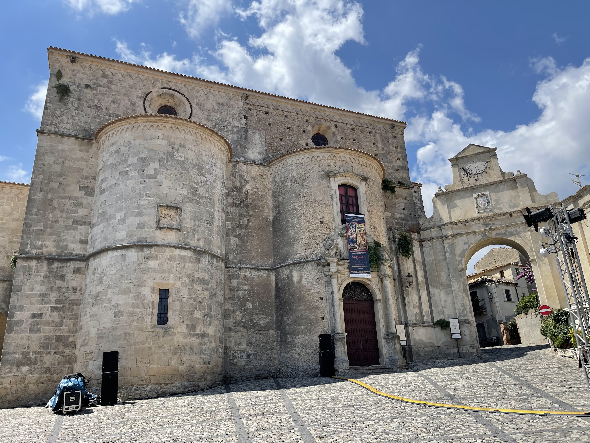
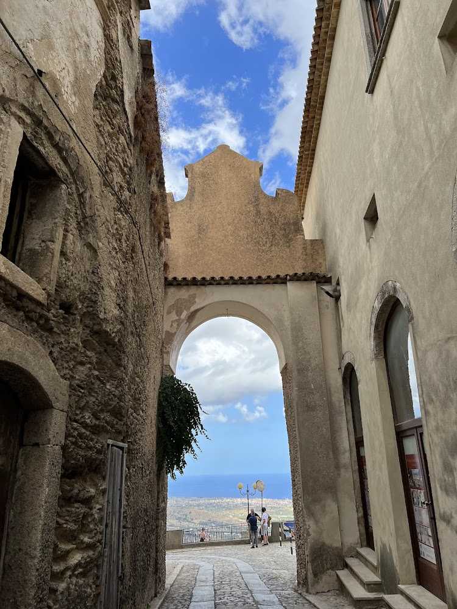
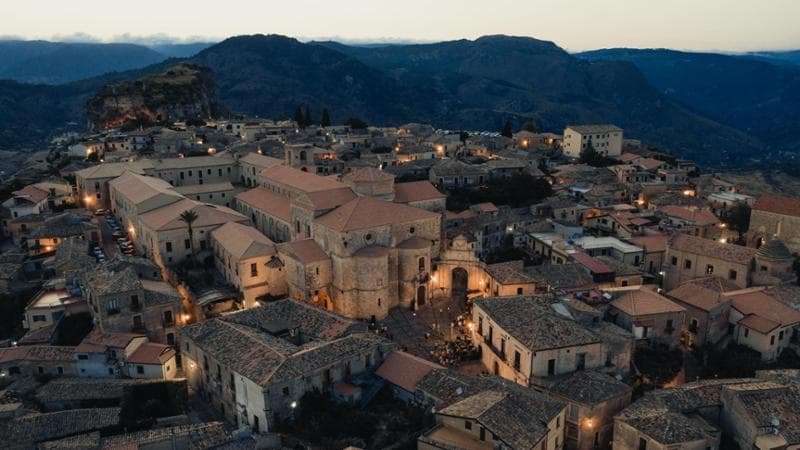
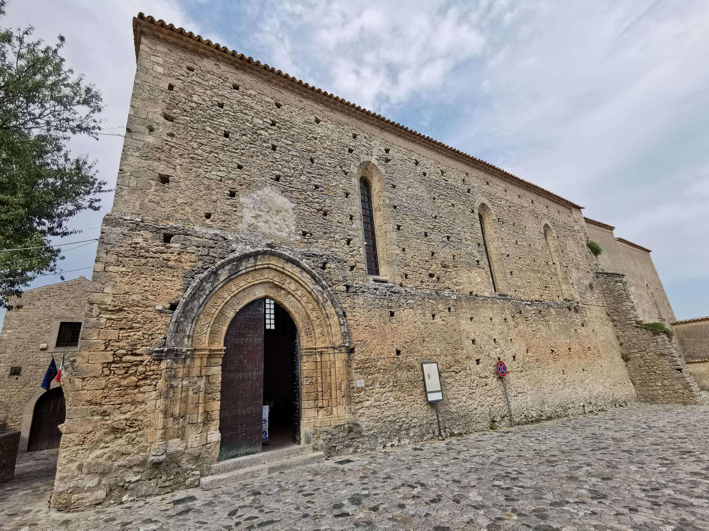
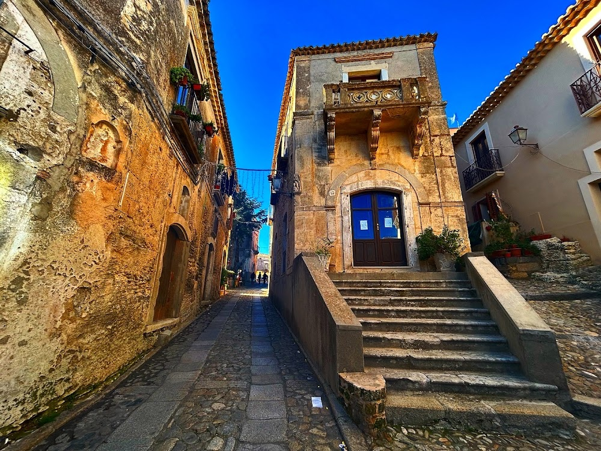
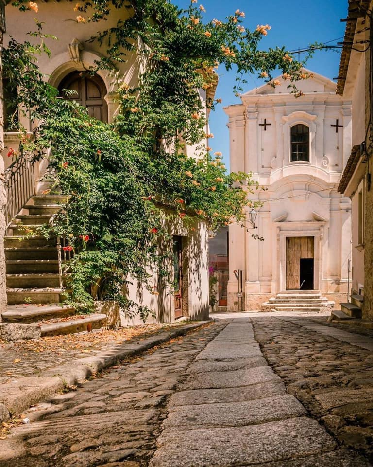

Gerace
Uno dei borghi più belli d'Italia, con la sua imponente Cattedrale normanna e un centro storico medievale che domina la vallata dello Ionio.
Fondazione
X secolo d.C.
Altitudine
470 m s.l.m.
Abitanti
2.426 (2025)
Riconoscimento
"I Borghi più Belli d'Italia"
La Storia di Gerace
Dalle Origini Medievali
Gerace, dal greco Γεράκι (Ierax, falco, luogo in cui nidificano i falchi), è stata fondata nel X secolo dai superstiti dell'antica Locri Epizefiri, fuggiti a causa delle incursioni saracene lungo la costa. Il nome riflette la posizione dominante del borgo, arroccato su uno sperone roccioso a picco sulla vallata.
Gerace ha conservato quasi intatta la sua struttura medievale ed è inserito tra "I Borghi più Belli d'Italia" grazie al suo grande valore storico, artistico e culturale. Il borgo si sviluppa su una collina che domina la vallata del fiume Novito e il Mar Ionio, offrendo panorami mozzafiato.
Le Piazze Principali
Le piazze principali sono: la Piazza del Tocco, che rappresenta l'antica sede del Parlamento locale dove si amministrava la giustizia; la Piazza Tribuna, che anticipa l'ingresso alla sede del vescovo e della Cattedrale, madre di tutte le Chiese della Diocesi di Locri-Gerace.
Queste piazze testimoniano l'importanza politica e religiosa che Gerace ha avuto nel corso dei secoli, diventando un centro amministrativo e spirituale di primissimo piano nell'Aspromonte e nella Calabria bizantina e normanna.
Architettura e Chiese
La Maestosa Cattedrale
La Cattedrale di Gerace, intitolata a Santa Maria Assunta, è considerata la più grande cattedrale della Calabria e uno dei monumenti più rappresentativi dell'architettura normanno-romana nel Sud Italia. Consacrata nel 1045, la sua struttura imponente domina il paesaggio con le tre absidi e il campanile merlato.
L'interno, a tre navate, conserva pregevoli colonne in granito provenienti dall'antica Locri, un ambone del XII secolo e un prezioso crocifisso ligneo. La cripta, con volte a crociera sorrette da colonne, è uno degli ambienti più suggestivi, testimonianza del passaggio dai riti orientali a quelli latini.
Chiesa di San Francesco
Oltre alla maestosa Cattedrale, ricordiamo la Chiesa di San Francesco, in stile gotico, voluta nella metà del 1200 dal Re Carlo II d'Angiò. È considerata bene architettonico di interesse nazionale per il suo pregevole portale arabo-normanno e il rosone decorato.
La chiesa ospita una ricchissima collezione di opere d'arte, tra cui affreschi del XIV secolo, sculture lignee di grande valore e il sarcofago di Nicola Ruffo, conte di Gerace e Sinopoli. L'intero complesso è un esempio straordinario dell'arte religiosa medievale nella Calabria meridionale.
Porta del Sole e Panorami
Il Balcone della Locride
La Porta del Sole, una delle antiche porte urbiche del borgo, offre l'affaccio unico sulla vallata sottostante e sul Mar Ionio. Da questo punto panoramico si gode di uno dei più bei tramonti d'Italia, con il sole che si spegne nell'orizzonte marino tingendo di rosso le antiche pietre del borgo.
Gerace rappresenta un esempio significativo di come un territorio possa valorizzare la propria identità per attirare visitatori e favorire lo sviluppo turistico. I suggestivi panorami sul mare e l'atmosfera storica del borgo contribuiscono a rendere l'esperienza dei turisti ancora più affascinante.
Vista sul Mar Ionio
Dal punto più alto del borgo, a 470 metri sul livello del mare, lo sguardo si perde fino all'orizzonte marino. La vista spazia dall'Aspromonte ai monti della Sila, dal golfo di Squillace fino alla costa ionica reggina, con le prime colline che degradano dolcemente verso il mare.
Questo privilegiato punto di osservazione ha fatto di Gerace uno dei borghi più fotografati d'Italia, immortalato da artisti, fotografi e registi che ne hanno celebrato la bellezza senza tempo e la sua posizione unica tra cielo e mare.
Artigianato e Tradizioni
Botteghe dell'Arte
In questo contesto, le botteghe artigiane, dove si lavorano ceramica, terracotta e tessuti, svolgono un ruolo molto importante, perché permettono ai visitatori di entrare in contatto diretto con la cultura e le tradizioni locali, tramandate da generazioni.
L'artigianato ceramico di Gerace è famoso in tutta la Calabria per la qualità dei manufatti e la bravura degli artigiani che ancora oggi lavorano con tecniche antiche, producendo oggetti unici che raccontano la storia e l'identità del borgo. La lavorazione del ferro battuto e del legno completano il ricco panorama artigianale locale.
Tradizioni Culinarie
La cucina geracese è ricca di specialità tipiche: il formaggio di capra e pecora prodotto sui monti aspromontani, i salumi locali, la 'nduja, il pane cotto a legna e i dolci tradizionali come le 'nzeppole e i mustazzoli. I vini dell'Aspromonte, con il loro sapore deciso, accompagnano queste prelibatezze.
I mercati settimanali e le sagre stagionali permettono ai visitatori di assaggiare prodotti genuini e conoscere le tradizioni gastronomiche di questa terra privilegiata, dove la montagna incontra il mare.
Manifestazioni e Intrattenimento
Il Borgo Incantato
Una delle manifestazioni più importanti è "Il Borgo Incantato" che anima nel mese di luglio il centro storico con spettacoli, artisti di strada, concerti e rappresentazioni teatrali. L'intero borgo si trasforma in un palcoscenico a cielo aperto.
Presepe Vivente
Il presepe vivente di Gerace è uno dei più suggestivi della Calabria. Durante le festività natalizie, i vicoli del borgo si animano con mestieri antichi, pastori e scene della tradizione, creando un'atmosfera magica e senza tempo.
Sagra del Fungo
A settembre si celebra la sagra del fungo, prodotto tipico dei boschi dell'Aspromonte. Degustazioni di piatti a base di funghi, mostre artigianali e spettacoli animano le vie del borgo in un'atmosfera festosa e conviviale.
Festa di Sant'Antonio
L'8 dicembre si celebra la festa del patrono, Sant'Antonio di Gerace, con processioni e riti religiosi che coinvolgono tutta la comunità. Una celebrazione che unisce fede e tradizione popolare.
Galleria Fotografica






Info Utili
Come Arrivare
In Auto: SS106 Jonica, uscita Locri. Seguire le
indicazioni per Gerace (10 km di strada panoramica).
Dista circa 15 km da Siderno e 90 km da Reggio Calabria.
Parcheggio gratuito disponibile fuori le mura del borgo.
Comune e Informazioni
Comune di Gerace
Piazza del Tocco, 1
89040 Gerace (RC)
Tel: 0964 356243
Email:
comunedigerace@libero.it
PEC: comunedigerace@postecert.it
Sito web:
www.comune.gerace.rc.it
Cosa Visitare
Cattedrale di Gerace (XI secolo)
La più grande cattedrale della Calabria, capolavoro
dell'architettura normanna. Aperta tutti i giorni 8:30-12:30 e
15:30-18:30.
Castello Normanno (X secolo)
Ruderi dell'antica fortezza con vista panoramica sulla vallata.
Ingresso libero.
Info Turistiche: 0964 356001
Ufficio Turistico comunale
Trasporti
Stazione Ferroviaria più vicina: Locri (linea
Jonica Reggio Calabria-Taranto)
Corso Umberto I, 89044 Locri
Collegamenti frequenti da/per Reggio Calabria e Siderno
Biglietteria automatica e sala d'attesa
Autobus: Collegamenti da Locri e Siderno con
autolinee locali (Federico e Audino Venturino)
Fermata principale: Piazza Stazione